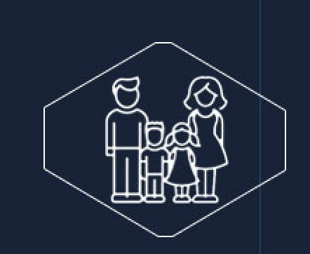
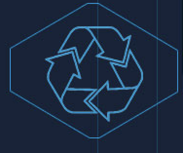

Estamos en 2030.
Imaginémoslo por un momento. ¿Qué pasará entonces?

Diez tecnologías disruptivas que están entre las más prometedoras de los últimos tiempos
Consumo mundial de energía (2011-2040)
Tasa de población mayor a 65 años por región


Diez tecnologías disruptivas que están entre las más prometedoras de los últimos tiempos
Consumo mundial de energía (2011-2040)
Tasa de población mayor a 65 años por región